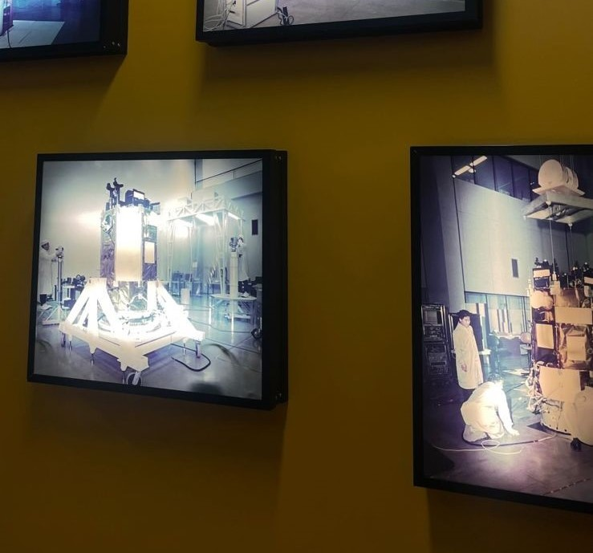
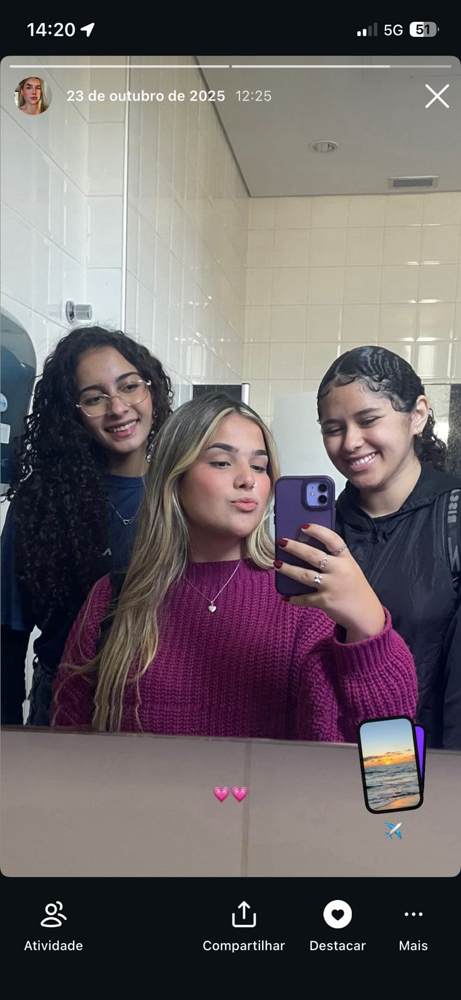

Sobre a trajetória:
O meu segundo ano foi diferente, com muitas experiências novas.
Comecei a fazer o curso de Desenvolvimento de Sistemas. No início, eu não gostava
tanto do curso, mas, ao longo do ano fui me adaptando e comecei a gostar bastante.
Fiz o segundo ano do Ensino Médio em 2025, conheci novas pessoas
e construí várias amizades.


Minhas metas de 2025:
No segundo ano, meu plano era ser advogada criminalista. Sempre me identifiquei com essa área e com os desafios que ela traz.
No início de 2025, eu comecei a pesquisar mais sobre essa área, e foi assim que comecei a perceber
que talvez não era aquilo que eu queria.